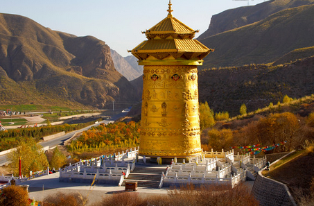
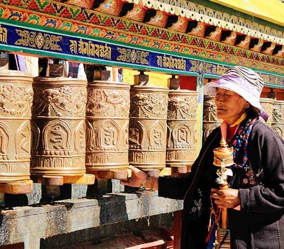

《无量寿经》说：“为世之灯明，乃人间最胜之福田。”燃点十千灯明，以忏灭众罪业。
灯，光明与智慧的表征，亦为十种供养之一。燃灯供佛始以佛说灯是光明与智慧的表征，是佛门中重要的供养具之一。在佛前燃灯，是用以标帜佛的智慧波罗蜜。
人们生活在三界里，举心动念莫不在造业，特别是无始以来的无明，若非有大智大慧，真不能照破。因此点灯供佛，藉助佛的智慧明灯引燃我们的心灯实在是必要的，尤其在这末法时代里，众生根性不仅普遍驽钝，而且造罪亦重，必须恒常持续不停。
中又记载，若常在佛塔、寺庙中虔诚地燃灯供佛，其果报表现：
1、双目、四肢永远完好不生缺陷；
2、身无病痛，嗓门柔软声音妙好；
3、眼珠、角膜、结膜，永好不坏；
4、生活安稳衣食丰足，心无所惧。
5、身体健康强壮，善财善宝滚滚而来。
可得到下面四种可乐的福德：
1、相貌庄严；
2、资财充足；
3、有大善根；
4、有大智慧；
可得到下面四种清净：
1、身业清净；
2、口业清净；
3、意业清净；
4、善友清净。
善男子、善女人在佛塔、佛殿或佛堂布施明灯，可以得到无数的福报：
1、容易证得天眼通；
2、分辨善恶的智慧；
3、不会发生胡涂昏暗的事情；
4、不易受到外在事物所迷惑；
5、不会出生在幽暗昏庸的地方；
6、有大福报；
7、命终生天，尤其是往生忉利天。
若能以清净心，起随喜心，合掌赞叹布施灯具点灯的人，光是以此随喜赞叹之善根，可得：
1、相貌端正；
2、得菩提善法眷属；
3、能忆持戒法永不忘失；
4、于人天果报往生善处；
5、于佛法得不坏净信；
6、佛法真理了了分明，得无碍智慧；
7、得增上圣道—能得无上解脱道。
奉施灯明乃至少以灯炷或酥油涂染，持以奉施，其灯明唯照道一阶，如此福德非是一切声闻缘觉所能了知，彼施灯者，所得果报福德之聚，无量无边不可算数，唯佛如来乃能知也。
汉传佛教转轮藏即转经轮，藏传佛教称之为转经筒、玛尼筒等。民间称之为转运筒。历史上，汉传佛教转轮藏是佛教寺院中一种可以回转的佛经架，又称转轮藏。亦即将书架做成八角形或圆形的书棚，中心立轴，使书棚得以旋转，此种书架即称“轮藏”。历史记载宋朝一共建有9座转轮藏，现存的最古老的转轮藏位于河北正定隆兴寺转轮藏阁。

佛教“转藏”制度始创于南朝梁代的傅大士(497～569),他姓傅名翕,字立风,又称善慧大士、双林大士,与达摩、志公共称梁代三大士。所谓的“转藏”,就是转读大藏经之意。在《神僧传》卷四中记载：“初大士在日，常以经目繁多，人或不能遍阅，乃就山中建大层龛，一柱八面，实以诸经运行不碍，谓之轮藏。（中略）从劝世人有发于菩提心者，能推轮藏，是人即与持诵诸经功德无异。今天下所建轮藏皆设大士像，实始于此。” 这就是转轮藏最初的原型。傅大士所创的转轮藏法门对佛教界的影响很大,至今少许寺院尚存有转轮藏的设施。
自古，为轮藏设立的专殿，俗称为“藏殿”。或作塔式建筑，如现今北京西郊颐和园内万寿山之前，有为帝后礼佛诵经之处，正殿为两层楼阁，两侧各有双层八角形配亭。亭内有木塔贯穿楼阁，储存经书佛像。塔中有轴，地下设有机关，可以转动。轮藏首创于江浙一带，故当初以南方寺院特为盛行，尔后乃推及至北方地区。
转轮藏,是一种源于宗教法器的建筑形式,是汉、藏两族建筑的结合体。其设施本身既具有古典建筑的美感,又包含了设计建造者对佛教教理、教义的领悟,是佛教文化物化的表现形式。
佛教界共同的说法是，转动转轮藏的功德，转动一周者，即等同于念诵《大藏经》一遍。转动二周者，等同于念诵所有的佛经，转动三周者，可消除所作身、口、意、罪障，转动十周者，可消除须弥山王般的罪障；转动一百周者，功德和阎罗王相等；转动一千周者，自他皆能证得法身；转动一万周者，可令自他一切众生解脱；转动十万周者，可远至佛海圣众处，转动百万周者，可令六道轮回海中一切众生悉得安乐；转动千万周者，可令六道轮回众生皆得拨除苦海；转动亿万周者，功德等同于普贤王如来。

短暂的时间里转动转轮藏或于日常中如小溪流水一样不间断地转动转轮藏可使三界众生获得解脱。以手接触转轮藏或眼睛见到转轮藏的有情不会堕入恶趣中，以手转绕转轮藏的功德可以使天空、大地、水、火、风、山石草木、森林中的有情皆成佛道。殊胜的节日转动，如佛陀涅槃日等关于佛教节日，使转轮藏不间断地转动，其功德加倍及千万倍，使三界众生获得解脱及成就。
若在寺院转动转轮藏，所居四方可得功德圆满。
若在村庄转动转轮藏，所居村庄可得和睦新村。
若在山顶转动转轮藏，所居十方可得吉祥如意。
若瑜伽士转动转轮藏，自他二利事业任运成就。
若出家众转动转轮藏，可以清净破誓言的罪业。
若实修者转动转轮藏，可以自心清净功绩成就。
若是咒师转动转轮藏，能够消除业障面见本尊。
若是医生转动转轮藏，所居瘟疫消除成就如来。
若是国王转动转轮藏，其臣民眷属皆能消业障。
若是官兵转动转轮藏，能够清净业障遣除违缘。
若是大臣转动转轮藏，能够消业以及增长福田。
若是王妃转动转轮藏，所居获得圆满两种资粮。
若是宫人转动转轮藏，所居和睦相处国政兴盛。
若是军官转动转轮藏，身边眷属都可消除业障。
若是士兵转动转轮藏，能保护其生命清净业障。
若是商人转动转轮藏，可以使其生意兴隆庞大。
若是名人转动转轮藏，心想事成所做事业圆满。
若是男人转动转轮藏，今世来世获得人天果报。
若是贫女转动转轮藏，今世来世获得清净男身。
若是穷人转动转轮藏，今世以及来世转贫为富。
转动一日转轮藏可以圆满一亿心咒的功德，这是诸佛善逝亲口宣说的教言。口中诵咒，手转转轮藏，心里观想咒轮，如此能够三者不离经常修持，来世可以获得殊胜窍诀的解脱，往生极乐刹土并得成就佛果的法门。
按照了义经典的观点，一切有漏的身语功德中，转动转轮藏的功德最大。莲花生大士说：“凡是印度译成藏文的佛法中，身语所做的善事里，没有比转六字真言转轮藏利益功德更大的了。” 身体和语言所造的善根中，转动转轮藏的功德无与伦比。
倘若经常使用转轮藏，可任运成就息增怀诛一切事业，平息自相续中的贪嗔烦恼，灭除世间上的灾难，遣除风胆涎等疾病，摆脱地、水、火、风的违缘，以及一切非时的横死苦难。手转转轮藏者，还可以增长菩提心、善心、生圆满次第的境界，获得无迷智慧，大悲菩提心自然增上，名声财富无勤圆满，寿命延长等有诸多功德。无论修任何一法，若使用转轮藏后再修持，通过诸佛菩萨的加持，不管修本尊、护法、空行，还是闻、思、修，都会圆满成功。
想帮助亲朋好友的话，也应该用佛法尤其是转动转轮藏来逐渐度化他为他祈福。从世间的角度来讲，转轮藏可以让人驱病、消灾、升官、发财、得名声，在很多古代成就者的论述中，这方面的感应非常多。总之，世间和出世间的一切功德，均依赖于我们的发心和身、语、意的力量，而身语所造的善根中，转轮藏的功德最大。我们口里念各种经典，功德很大；身体做磕头、绕塔、经行等，功德也很大，但按照佛经的教证，这些跟转轮藏的功德比起来，后者的功德远远超胜前者。
转此转轮藏之人，生生世世不会转生于邪见之家、有盲、聋、哑、跛者之家、贫穷下贱之家、屠夫渔夫等种姓低劣之家，生生世世转生到种姓高贵、信仰佛教、行持善法之家中。